Elektroinstallation, Wallbox, Photovoltaik, Wärmepumpen-Anschluss, Smart Home und VDE-Prüfungen – von der Beratung bis zur Abnahme, aus einer Hand und beim selben Ansprechpartner. Jede Anlage übergeben wir gemessen und dokumentiert.
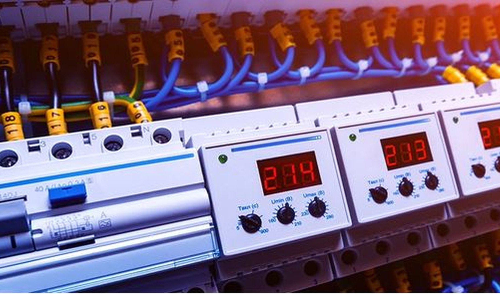
Von der Basisinstallation bis zur kompletten Elektrifizierung, nach aktuellen Normen.
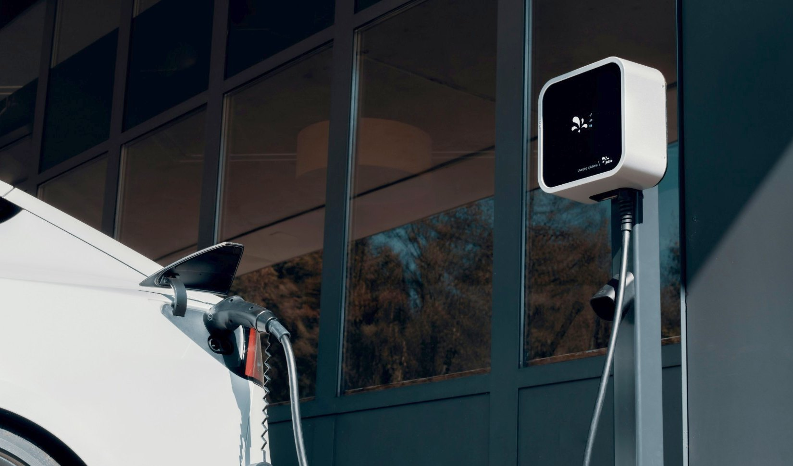
Sichere Ladelösungen für E-Fahrzeuge, inklusive Anmeldung beim Netzbetreiber.
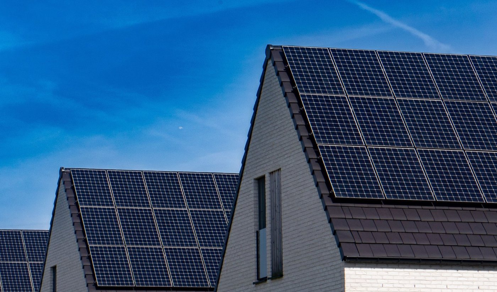
Photovoltaik zur Stromerzeugung – Planung, Installation und Inbetriebnahme.
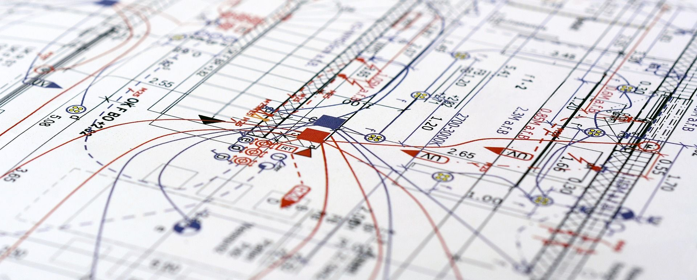
Von der ersten Idee bis zum umsetzbaren Konzept – wir beraten Sie zu Machbarkeit, Aufwand und sinnvollen Kombinationen.
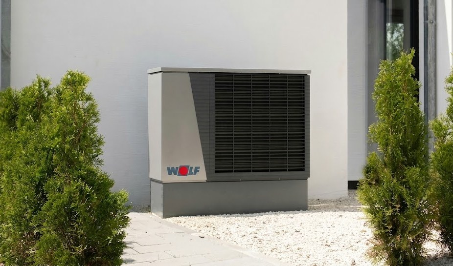
Der elektrische Teil: Zuleitung, Absicherung, Zählerplatz und Anmeldung.
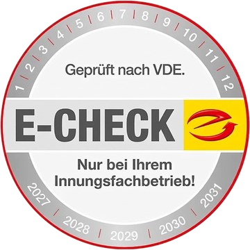
Prüfung ortsfester Anlagen und Geräte nach VDE, mit vollständigem Messprotokoll.
Strukturierte Verkabelung, Serverschrank und WLAN – für Büro und Zuhause.
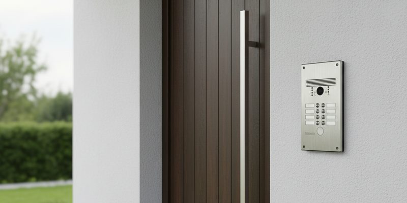
Video-Türklingeln für Ein- und Mehrfamilienhäuser, auf Wunsch mit App.
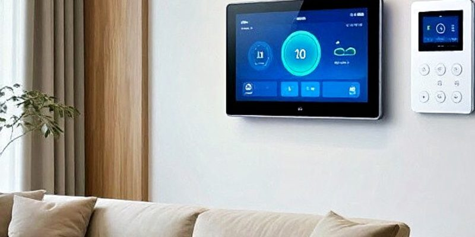
Licht, Rollläden und Heizung zentral steuern – mit KNX oder funkbasiert.
Kein Rätselraten, keine Überraschungen auf der Rechnung. Sie wissen bei jedem Schritt, woran Sie sind.
Sie rufen an oder schreiben uns. Wir klären kurz, worum es geht und was Sie sich vorstellen.
Wir schauen uns die Gegebenheiten an, messen nach und beraten Sie zu den sinnvollsten Lösungen.
Sie bekommen ein schriftliches Angebot mit klaren Positionen. Auf Wunsch mit Hinweis auf mögliche Förderungen.
Wir führen die Arbeiten zum vereinbarten Termin aus und übergeben die Anlage mit Messprotokoll.
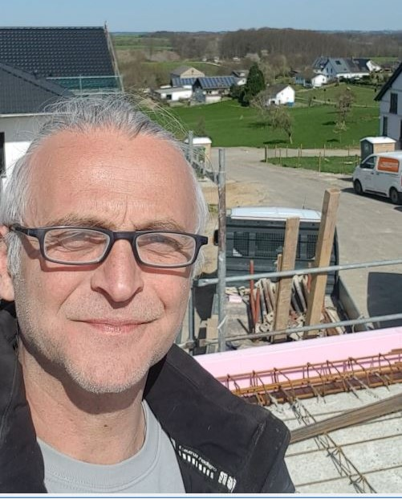
Projektleiter
Bei uns sprechen Sie direkt mit dem, der auch auf die Baustelle kommt. Kein Callcenter, keine Weiterleitung — Sie erreichen mich persönlich, und ich sage Ihnen ehrlich, was machbar ist und was es kostet.
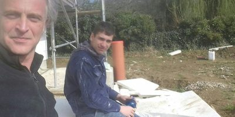
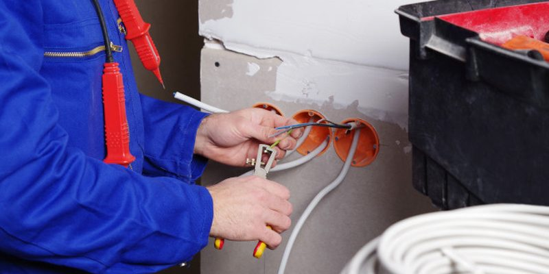
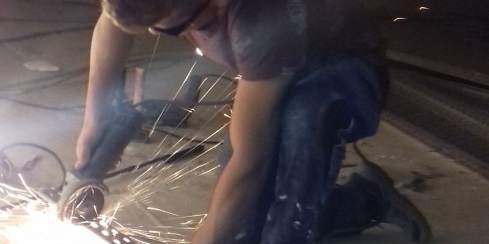
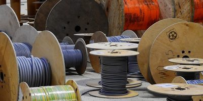
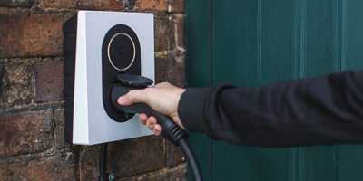
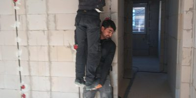
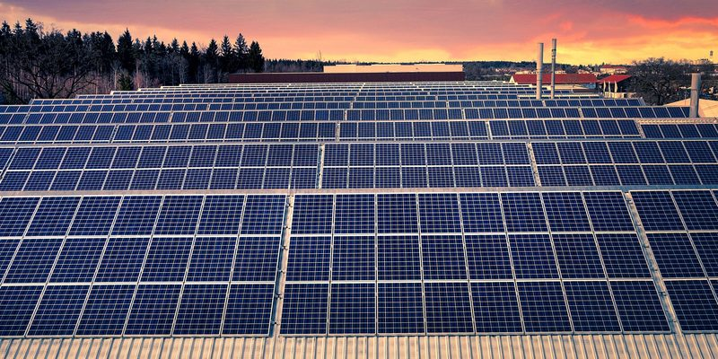
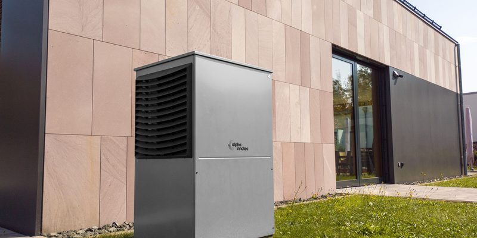
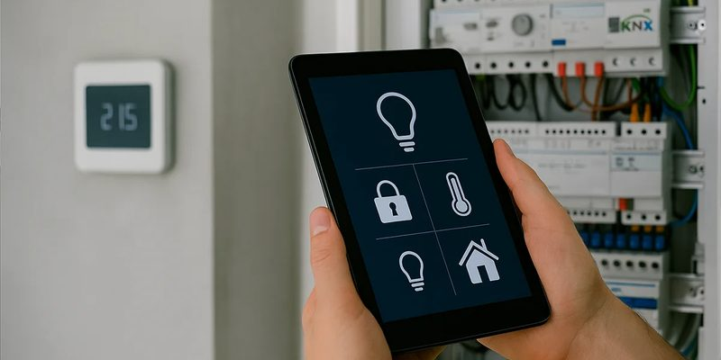
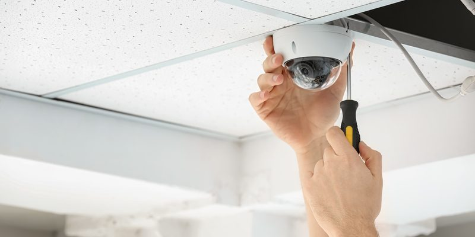
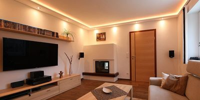
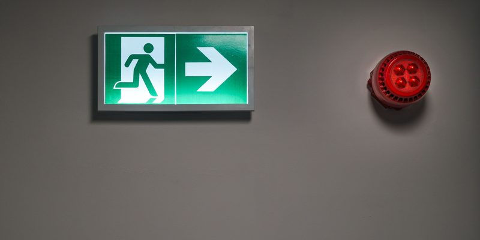
Ob Neubau, Sanierung oder einzelne Komponente — schreiben Sie uns oder rufen Sie direkt an. Wir melden uns so schnell wie möglich zurück.
Ihre Anfrage erreicht uns trotzdem — wir beantworten sie, sobald wir zurück sind.
Wir melden uns innerhalb eines Werktags bei Ihnen zurück.